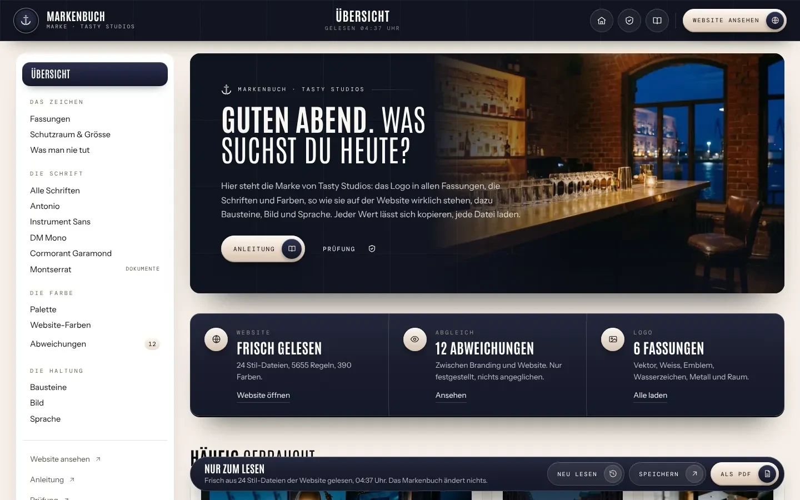
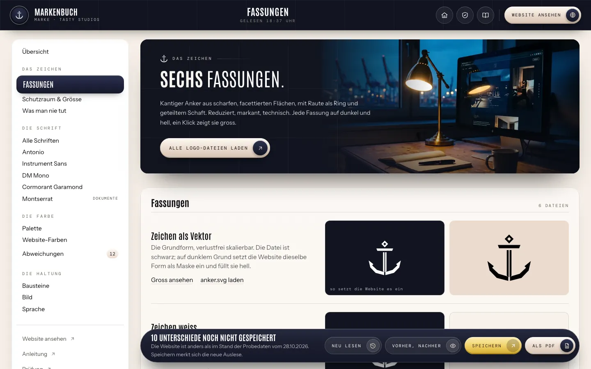
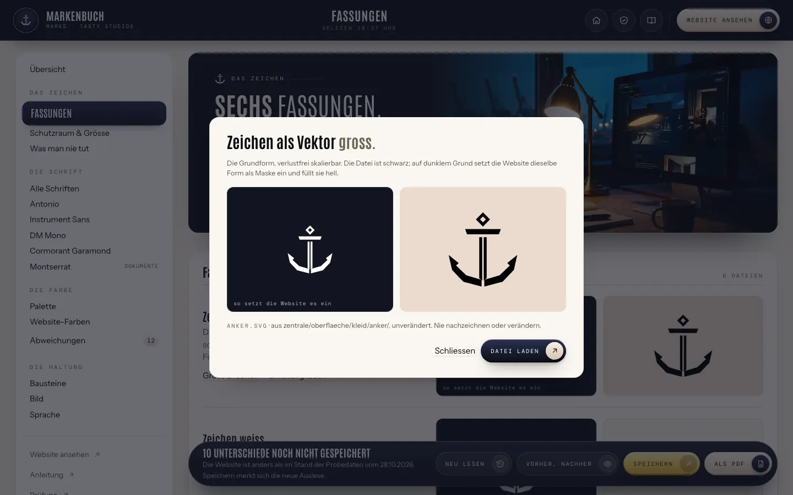
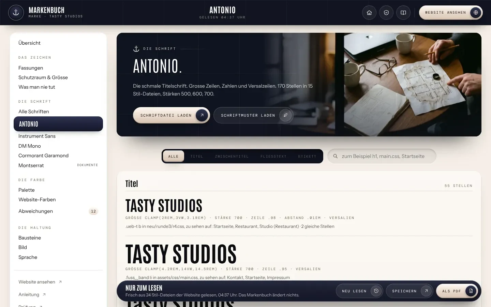
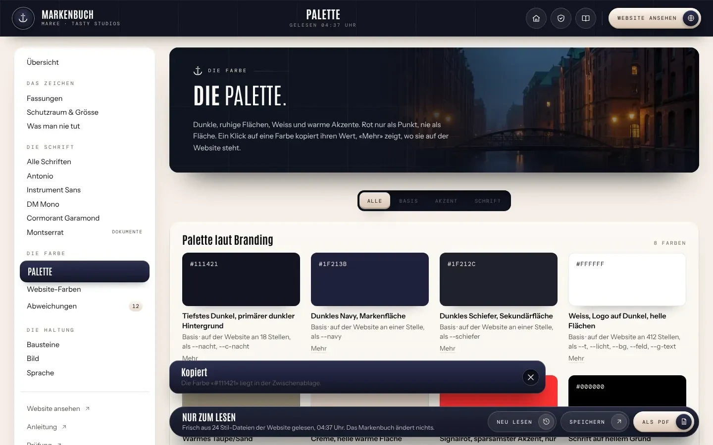
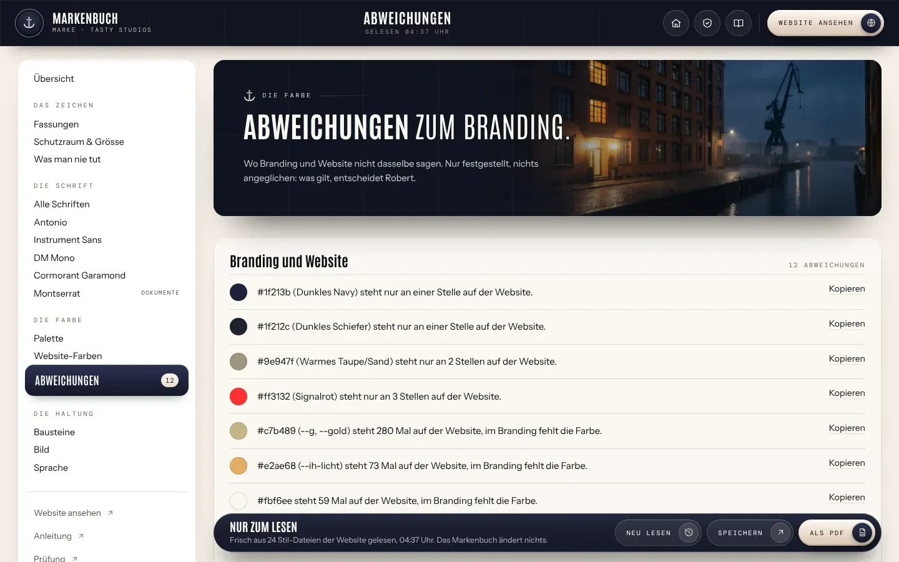
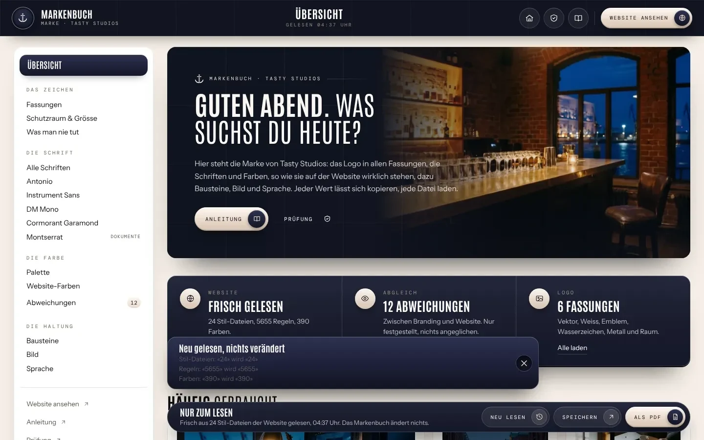

Markenbuch
So findest du die Marke.
Im «Markenbuch» steht alles, was Tasty Studios ausmacht: das Logo in sechs Fassungen, die Schriften und Farben, so wie sie auf der Website wirklich stehen, dazu Bausteine, Bild und Sprache. Jeder Wert lässt sich kopieren, jede Datei laden, das ganze Buch als PDF sichern. Das Markenbuch ändert nichts: es liest die Website bei jedem Öffnen neu.
1
Die Übersicht
Oben siehst du, wann die Website zuletzt gelesen wurde, wie viele Abweichungen es zwischen Branding und Website gibt und wie viele Logo-Fassungen da sind. Darunter «Häufig gebraucht»: die Wege, die im Alltag am meisten vorkommen. Ganz unten jedes Blatt des Buchs mit einem Foto.
Links im Rand findest du dieselben Blätter, geordnet nach Zeichen, Schrift, Farbe und Haltung. Am Handy öffnet «Bereiche» oben den Rand.

2
Das Zeichen
Unter «Fassungen» steht jede Logo-Datei aus den Grundlagen, links auf dunklem, rechts auf hellem Grund. Wo eine Fassung auf einem Grund nicht eingesetzt wird, steht es dort. «Alle Logo-Dateien laden» gibt alle sechs als ZIP.
«Schutzraum & Grösse» zeigt, wie viel Luft das Zeichen braucht und wie klein es werden darf, «Was man nie tut» die Regeln für das Logo.

3
Eine Logo-Datei laden
Klick auf eine Fassung: sie öffnet sich gross, mit dem Namen der Datei. «Datei laden» gibt sie genau so, wie sie in den Grundlagen liegt. Danach erscheint unten eine Quittung mit dem Namen der Datei.
Das Logo wird nie nachgezeichnet oder verändert. Wer es braucht, nimmt immer diese Dateien.

4
Die Schriften
«Alle Schriften» zeigt die vier Schriften der Website und Montserrat für Dokumente. Jede hat ihr eigenes Blatt mit echten Proben: Titel, Zwischentitel, Fliesstext und Etikett, mit Grösse, Stärke, Zeile und Abstand, so wie sie in den Stil-Dateien stehen.
Oben wählst du eine Rolle oder suchst nach einer Stelle. Ein Klick auf eine Probe zeigt sie gross, mit «CSS kopieren». «Schriftdatei laden» und «Schriftmuster laden» stehen oben in der Bühne.

5
Einen Farbwert kopieren
Unter «Palette» steht jede Farbe aus dem Branding. Ein Klick auf das Farbfeld legt den Wert in die Zwischenablage, die Quittung unten sagt, welcher. «Mehr» zeigt Hex und RGB und wo die Farbe auf der Website steht.
«Website-Farben» zeigt, was auf der Website steht, im Branding aber fehlt; oben lässt sich nach Wert, Namen oder Datei suchen.

6
Abweichungen
Wo Branding und Website nicht dasselbe sagen, steht es unter «Abweichungen»: Farben, die im Branding stehen und auf der Website kaum vorkommen, und Farben der Website, die im Branding fehlen. Das Markenbuch gleicht nichts an. Was gilt, entscheidet Robert.

7
Neu lesen und als PDF
Unten steht immer «Nur zum Lesen» und wann die Website gelesen wurde. «Neu lesen» holt den neuesten Stand; die Quittung zeigt vorher und nachher: Stil-Dateien, Regeln und Farben. «Speichern» gibt es auch hier, es meldet nur, dass nichts geändert ist.
«Als PDF» setzt alle Blätter untereinander, jedes auf eine eigene Seite. Im Druckdialog «Als PDF sichern» wählen.

8
Wenn etwas nicht klappt
Jede Meldung trägt den Knopf «Was tun?». Er führt zur Prüfung: Sie läuft auch dann, wenn das Werkzeug selbst nicht startet, sagt, was los ist, und was zu tun ist. Antwortet der Server nicht, zeigt das Markenbuch den gespeicherten Stand.